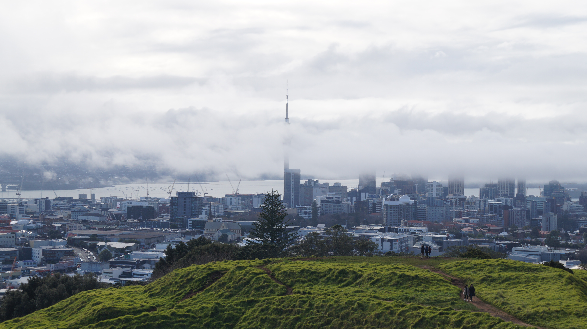
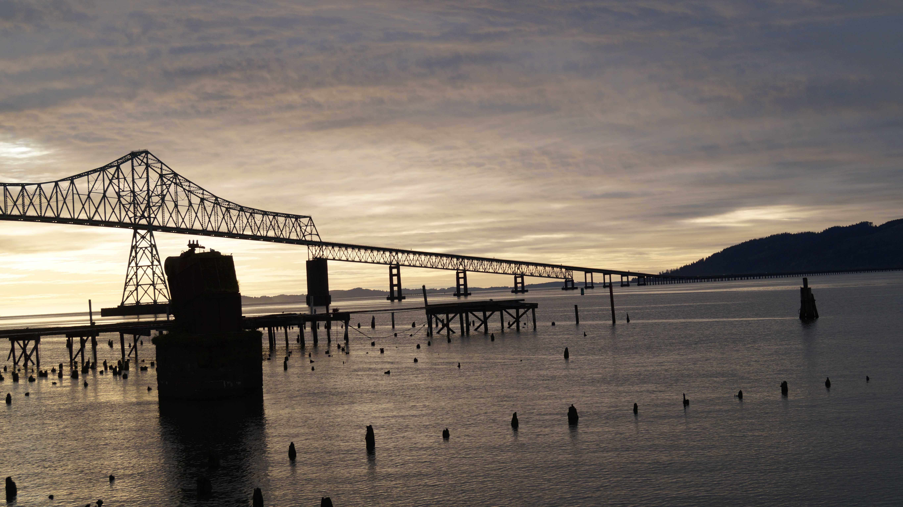
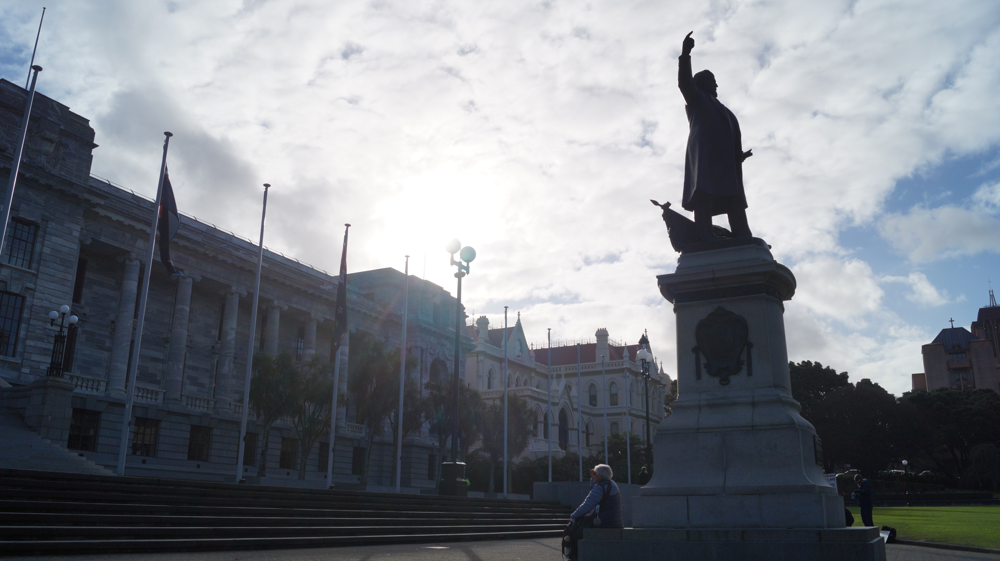
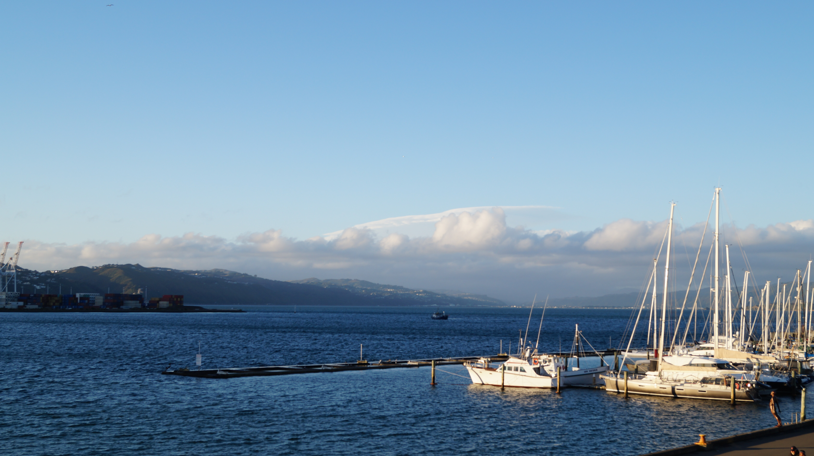
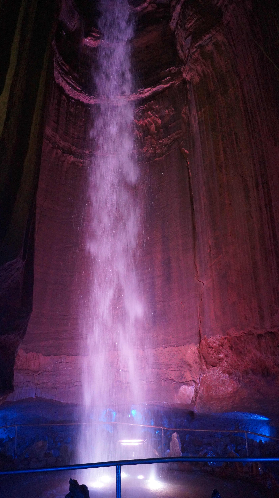
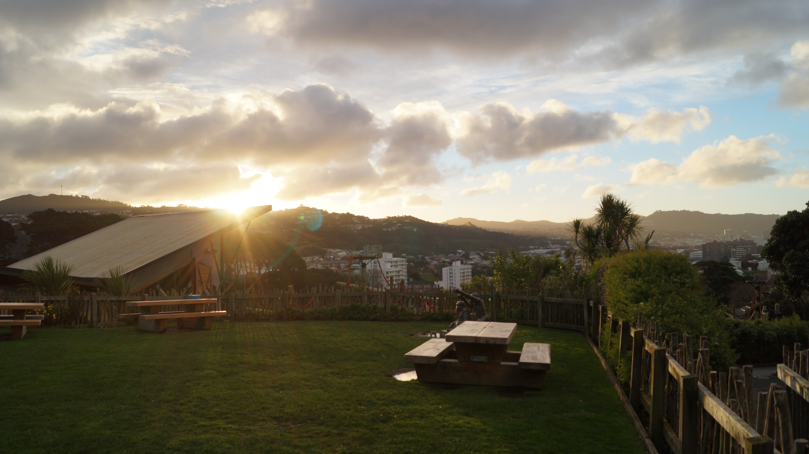

Just a collection of a few of my favorite images throughout the years:

A view of the Sky Tower in Auckland, New Zealand from atop Mt. Eden

The entry bridge and harbor to the fairly smaller yet stunning city of Olymmpia, Washington

A section of the incredible parliment building in Wellington, New ZealandA stunning view of the Smokey Mountains from an opposing mountain in Gatlinburg, Tennessee

A view of the scenic Wellington Harbor from Te Papa Mueseum in Wellington, New ZealandSeattle, Washington on an average night from atop the Space NeedleA mountain range in the Sooke State Park in Victoria, Canada

The underground waterfall named Ruby Falls in Chattanooga, Tennessee

The valley that is Lower Hutt in Wellington, New Zealand at sunset